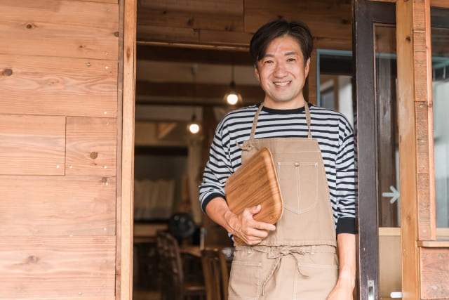

オーナーシェフ 山田 太郎
1980年、京都府生まれ。
幼いころから料理人の父に影響を受け、食への興味を深める。
地元の調理師専門学校を卒業後、イタリア・トスカーナ地方で5年間修行を積み、本場の郷土料理と食文化を学ぶ。
帰国後は都内の有名イタリアンレストランで副料理長を務め、地元に戻り「四季の恵みダイニング」をオープン。
料理への想い
「料理は、素材との対話だと思っています。
調理を通して、その素材が最も美味しく感じられる瞬間を引き出したい。
そして、誰かの記憶に残るような“味わいのある時間”を提供したい」
そう語る山田シェフの料理には、手間と時間、そして食材への深い敬意が込められています。
シェフのこだわり
- 地元・京都の農家や漁師から毎朝届く新鮮な旬素材
- 出汁やソースはすべて自家製、化学調味料不使用
- 季節ごとの特別コースは月替わりで内容が一新
代表メニュー「季節の前菜盛り合わせ」
その季節にしか味わえない素材を使い、見た目にも華やかに仕上げた一皿。
訪れたお客さまの「おぉ…」という驚きと笑顔を、何より大切にしています。